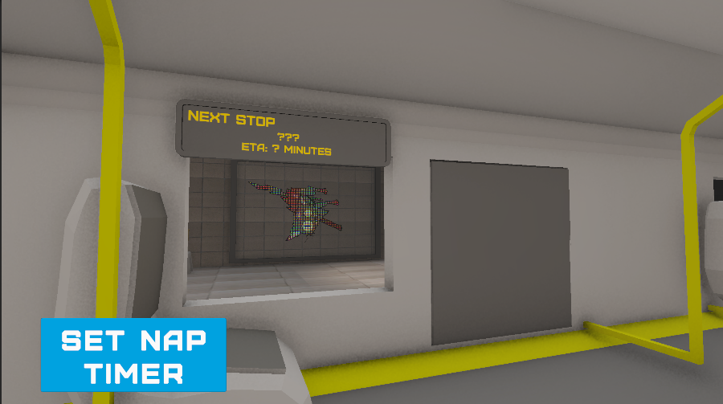
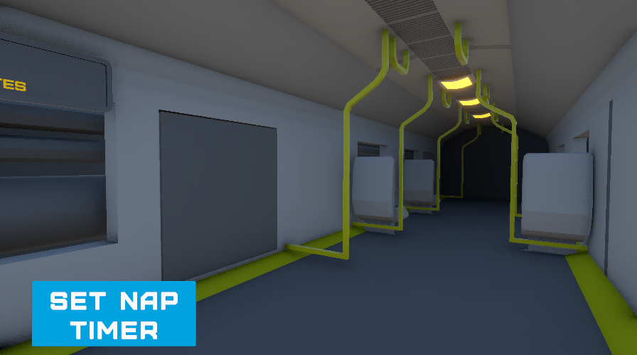
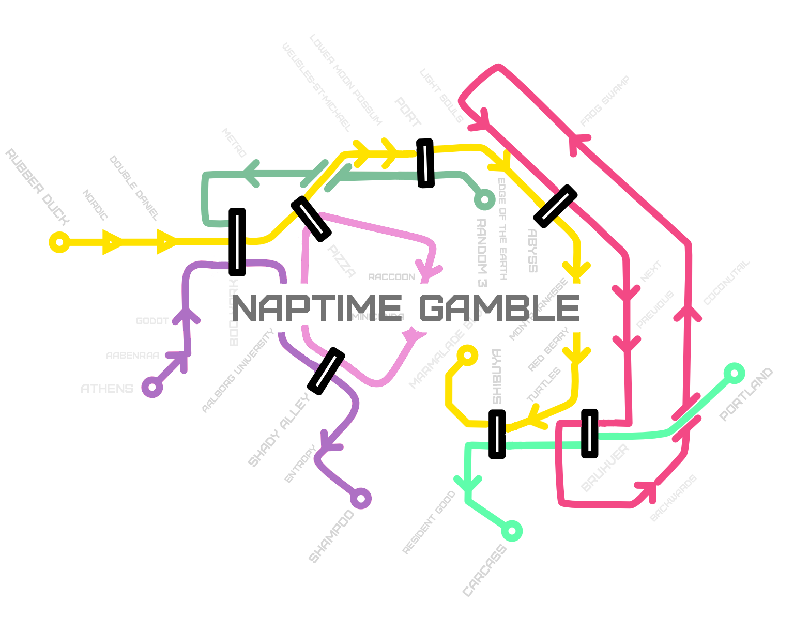
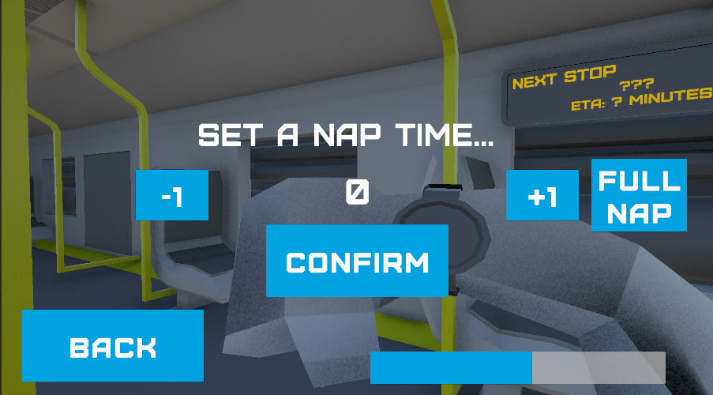

Naptime Gamble





Overview
This is a project made by a 7-person team at Nordic Game Jam 2025. We worked on it for two full days. The themes for the jam were "sleep" or "eat", and we chose to go with "sleep".
The game centers around the idea of a sleep-deprived 9-5 worker going back home on the metro. You have to set your nap timer, switch metro lines, and be careful not to miss the important stations.
The game was supposed to have replayability value by switching the goal station around, but we only had time for one ending. We also gathered voice lines from around 20 other NGJ25 participants.
Role and Contributions
Artist and Game Designer. My contributions for the game started with being an active part of the brainstorming and conceptual phase. The game inherently revolved around a metro map, so I had the main task of creating different sketches for the maze of metro lines.
We had to simplify it a lot in the end, which can be seen in the sketches. It was also due to deciding on the final mechanics quite late in the process. I also provided other teammates with reference photos for asset creation. I created 3D models and some of the textures for the metro stations.
Engine and Tools
Unity, Github, Photoshop, Gimp, Blender, Shapelab (VR).